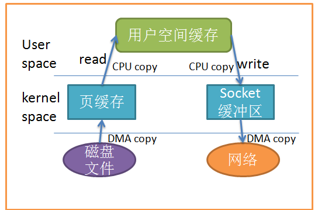
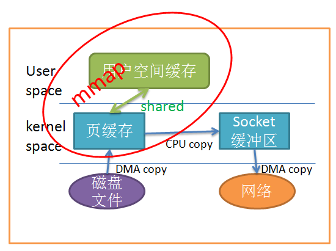
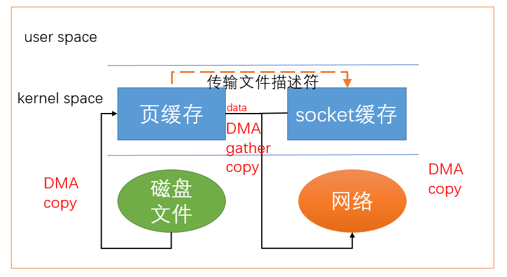

Linux Splice
理解零拷贝有助于理解Android Binder通信
参考文档
简述
零拷贝技术都是减少数据在用户空间和内核空间拷贝技术实现；
用户空间拷贝次数
两次拷贝
一次拷贝
零次拷贝

示例
#define _GNU_SOURCE
#include <fcntl.h>
#include <stdio.h>
#include <unistd.h>
#include <errno.h>
#include <string.h>
#include <time.h>
int main(int argc, char **argv)
{
int pipefd[2];
int result;
FILE *in_file;
FILE *out_file;
char buff[65537];
if (argc != 3) {
printf("usage: ./client infile outfile\n");
exit(0);
}
result = pipe(pipefd);
in_file = fopen(argv[1], "rb");
out_file = fopen(argv[2], "wb");
off_t off_in = 0, off_out = 0;
int len = 1024*1024*30;
while (len > 0) {
int size = 65536;
if (len < size) size = len;
len -= size;
result = splice(fileno(in_file), &off_in, pipefd[1], NULL, size, SPLICE_F_MORE | SPLICE_F_MOVE);
result = splice(pipefd[0], NULL, fileno(out_file), &off_out, size, SPLICE_F_MORE | SPLICE_F_MOVE);
// printf("%d\n", result);
// read(fileno(in_file), buff, size);
// write(fileno(out_file), buff, size);
}
close(pipefd[0]);
close(pipefd[1]);
fclose(in_file);
fclose(out_file);
return 0;
}